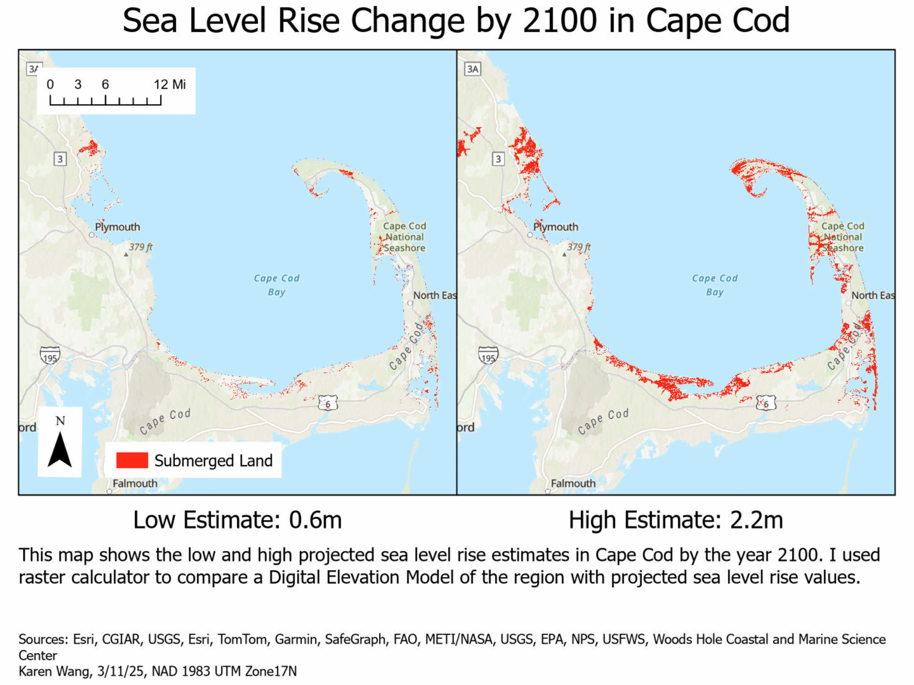

Sea Level Rise Change by 2100 in Cape Cod
Karen Wang
Description
This map shows the projected sea level rise in Cape Cod, Massachusetts by the year 2100, using both low and high estimates. Using a digital elevation model (DEM) of the region, I used raster calculator in ArcGIS to visualize the areas that would be submerged in each scenario. To simulate sea level rise, I subtracted the projected sea level value from the original DEM, redefining which areas fall below the new "zero" elevation and creating a new baseline.